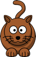
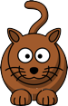

2.1.1 Monday Morning Exercises
Write a function area that consumes numbers representing the width and height of a rectangle and produces the rectangle’s area.
Write a function image-area that consumes an image an produces the image’s area (independent of what the image shows).
You will need to use the image-width and image-height operators from the "universe.ss" teachpack.
Write a function classify that takes an image and produces "tall" if the image is taller than it is wide, "wide" if it is wider than it is tall, or "square" if its width and height are the same.
Our virtual pet game starts with by just displaying a cat that moves across the screen. There are several pieces to this simple game: a cat image, a function to put the cat into its current place on the screen, a function to change the cat’s position, and a big-bang to put it all together.
Start with an image of a cat:

Copy the cat image and paste it into DrScheme, then give the image a name with define. Try using the name in the interaction window.
To show the cat in its own window, you need to place the cat at some location in a scene, and then a scene can be shown in a window. To put the cat in a scene, try
(place-image ‹cat-image› ‹x-position› ‹y-position› (empty-scene 200 200)) but replace ‹cat-image› with your cat name (or the image itself) and replace ‹x-position› and ‹y-position› with specific numbers. The ‹x-position› and ‹y-position› determine the location of the center of the cat relative to the top-left of the scene.
The result will be an image, because a scene is a particular kind of image. Now you have the basic idea of creating a scene.
Write a function cat-scene that consumes a number for the cat’s ‹x-position› and produces a scene with the cat at that position.
(The cat will stay at the same ‹y-position› in the game, because the cat is too lazy to jump.)
Write a function cat-move that consumes a number for the cat’s ‹x-position› and produces a number for the cat’s new ‹x-position› after it takes a three-pixel step to the right.
Don’t forget that you should be writing contracts and tests for functions like cat-move.
Show the walking cat in a window with
(define (run-cat x0) (big-bang x0 (on-draw cat-scene) (on-tick cat-move))) (run-cat 0) ; in interactions
Optional: The cat walks off the right edge of the screen. For now, make the cat appear back at the left edge after it walks off the right edge.
Optional: You can also make the cat animation fancier by using a second, slightly different image:

Adjust cat-scene to use one cat image or the other based on whether ‹x-position› is odd using the odd? function.
Our virtual pet game will need a gauge to show how happy the cat is. If you ignore the cat, it becomes less happy. If you pet the cat, it becomes happier. If you feed the cat, it becomes much happier. We’ll feed the cat by pressing the down-arrow key, and pet the cat by pressing the up-arrow key.
Like the cat’s location, its happiness can be represented by a number, this time between 0 and 100. To show the cat’s level of happiness in the game, we will need a function to show its happiness level. (We combine the cat and gauge later. For now, we implement the gauge separately.)
Write a function gauge-scene, which takes a happiness level (a number between 0 and 100) and produces a scene with a solid, red rectangle to show happiness. For a happiness level of 0, the bar should be gone; for a happieness level of 100, the bar should go all the way across the scene.
You’ll need the rectangle function. For example
(rectangle 20 10 "solid" "red")
makes a rectangle that is 20 wide, 10 tall, and solid red.
The scene for a gauge should be 200 pixels wide and 20 (not 200) pixels high.
Write a function gauge-decline that takes a number between 0 and 100; it produces 0 if the given number is 0, and it produces 0.1 less than the number otherwise.
Write a function gauge-react that takes a number between 0 and 100 and a key, and it produces a number between 0 and 100. A key can be "down" for a down-arrow key, "up" for the up-arrow key, or other strings for other keys.
Feeding (with the down arrow) increases happiness by 10. Petting (with the up arrow) increases happiness by 2. For any other key, happiness should be unchanged.
To keep the result in bounds, the function min is useful.
Put the gauge together with
(define (run-guage h0) (big-bang h0 (on-draw gauge-scene) (on-tick gauge-decline) (on-key gauge-react))) (run-gauge 50) ; in interactions